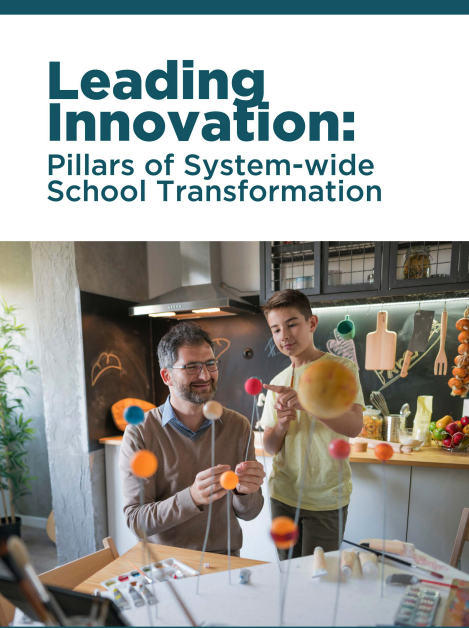

The Work
My leadership responsibilities grew during my years in Michigan Virtual’s marketing department, eventually leading to the Director of Marketing role. I managed and mentored talented people, and I also kept making things: guidebooks, videos, reports, infographics, social graphics, and web pages built from scratch. I stayed involved because the work interested me and I was good at it.
This page collects representative samples of that individual contributor output: the things I personally conceived, designed, wrote, filmed, or built. They span video production, publication design, social media content, and multi-format audience strategy from my years in marketing at a statewide nonprofit competing for attention against well-funded for-profit edtech brands.
Social Media
Social content for an educational nonprofit is a harder design problem than it looks. The subject matter is dense, the audiences are skeptical, and the competition for attention includes everything from consumer brands to viral content. Getting a teacher or district administrator to pause while scrolling requires both visual clarity and a reason to care.
The posts below represent samples of graphics that communicate a complex idea simply, visual storytelling that centers real people, and content designed to build credibility and connection rather than drive clicks. These were produced personally in Canva and Photoshop.
Video Production
Each of the videos below is one I personally produced: concept, scripting, filming, editing, and publishing. They span promotional content, educator-focused storytelling, and organizational announcements. Click through to watch on YouTube.
Audience Strategy
Michigan Virtual is legislatively required to compile and publish an annual K-12 Virtual Learning Effectiveness Report. The document is dense, research-heavy, and important. It is also the kind of thing that most people will never read.
Rather than publish a PDF and move on, we built a full multi-format communications strategy around these reports. The goal was to make the findings genuinely accessible to every stakeholder who needed them: researchers, district leaders, policymakers, teachers, and parents. Each format was designed for a different context and reading behavior, not as variations on the same content, but as distinct entry points into the same core findings.
The suite included a fully accessible web report built in WordPress, a plain-language infographic mailed with a letter to every superintendent in the state, a video presentation for people who learn by watching, and an interactive benchmarking tool that lets users slice the data by demographics, school level, and subject area.
The question was never "how do we share this report." It was "who needs to know this, and how do they actually consume information?" Different answers for different people, built intentionally.
Web and Print
Not every piece of content is trying to go viral. Some of it just needs to be clear, credible, and in the right hands at the right time. The two examples below represent different ends of that spectrum: a designed guidebook built to support a consulting practice, and a competitive landing page built to answer a question buyers were already asking.

Skills Demonstrated
End-to-end solo production across multiple formats: promotional, educational, and informational. Filming, editing, and publishing handled independently.
Built and published the annual Effectiveness Report in WordPress to WCAG AA 2.1 accessibility standards, structured for research and policy audiences.
Produced guidebooks, infographics, and digital collateral independently using Canva and Adobe Creative Suite, at a level of polish that held up against for-profit competition.
Designed multi-format content suites intentionally matched to how different stakeholders actually consume information, not just how organizations prefer to publish it.
Created visual content for complex institutional topics that competed for attention in a crowded feed, designed personally rather than delegated to a vendor.
Wrote across formats: guidebook content, web copy, social captions, superintendent letters, and video scripts. Clear, direct, audience-first in every case.